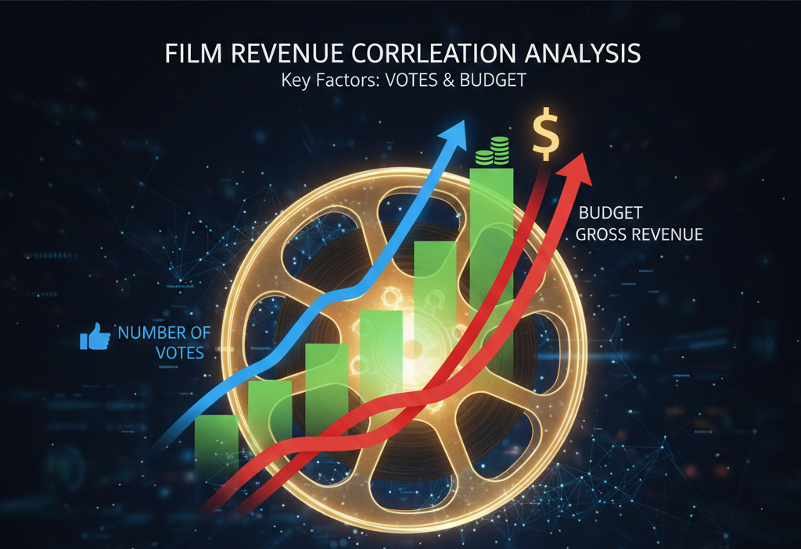
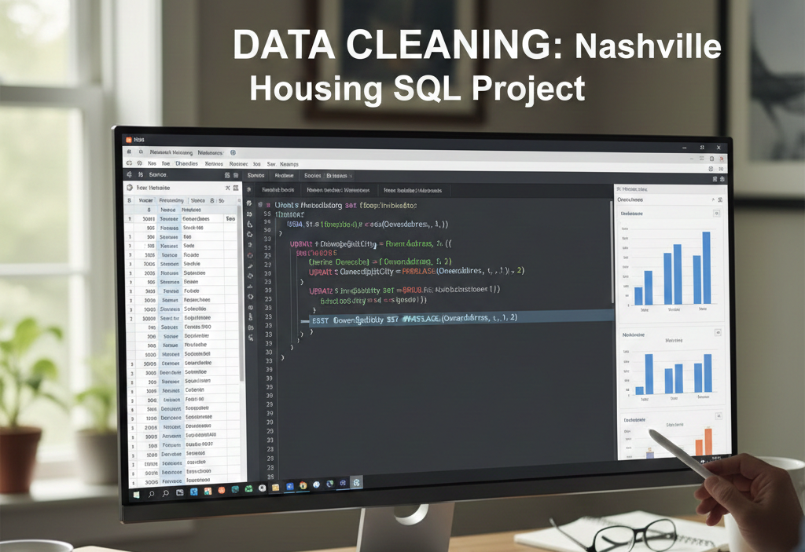
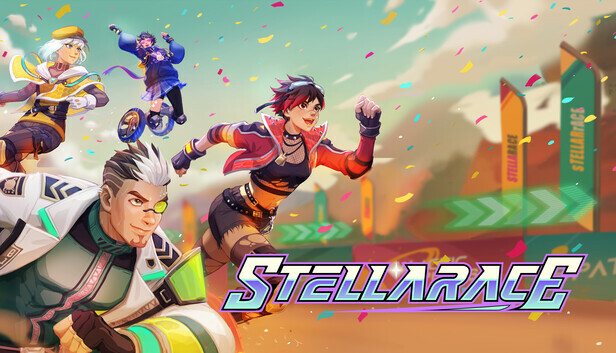

Movie Correlation With Python

This project conducted a correlation analysis to determine which variables had the most significant impact on a film's gross revenue.
The results of the analysis showed that the number of votes and budget had the highest correlation with gross earnings, indicating that films with large budgets and many reviews tended to generate higher revenues.
In addition, there was a strong correlation between budget and gross, confirming the direct relationship between production investment and a film's financial results.
Nashville Housing Data Cleaning with SQL

This project focuses on cleaning and preparing the Nashville Housing dataset using SQL. The main steps include handling missing values, breaking down addresses into more structured columns, standardizing category values such as “Sold As Vacant,” removing duplicates using window functions, and removing unused columns.
The result is a much cleaner, more consistent dataset that is ready for further analysis.
Stellarace – Game Analysis & Quality Evaluation

This project focuses on analyzing and evaluating the quality of the Stellarace game through a process of gathering issues, creating flow diagrams, and compiling test cases to ensure that the game flow runs according to design. This analysis helps identify bugs, improve user flow, and strengthen overall gameplay quality.
QA Testing for Web-Based Accounting Information System Using Whitebox & Blackbox Methods

This project implements two testing methods Whitebox Testing with Halstead Metrics and Blackbox Testing with Equivalence Partitioning to ensure the quality and reliability of the web-based Accounting Information System.
Whitebox Testing is used to analyze code complexity and efficiency, while Blackbox Testing validates key functions such as Login, Register, Services, Contact, and About Us (Edit).
This approach provides a comprehensive evaluation of system performance, both in terms of internal code and user experience.